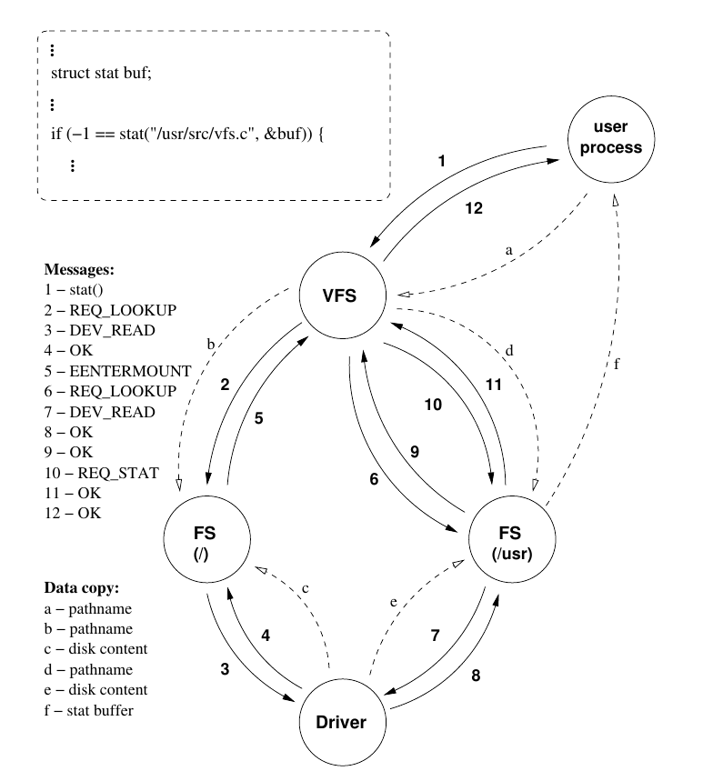

VFS Introduction
Virtual File System
Virtual File System is an abstraction layer – over the file system implementations – in the operating system. It provides a common interface for the applications so that they can access different types of underlying file systems in a uniform way and therefore the differences in their properties are hidden. This interface consist of the file system related system calls.
The VFS also provides a common interface for the underlying file systems and manages resources that are independent from the underlying file systems. This common interface ensures that new file system implementations can be added easily.
Introduction to Design of VFS in Minix Operating System.
Exploiting modularity is a key idea behind MINIX, therefore the design of the Virtual File system layer is also driven by this idea. In contrast to the monolithic kernels, where the VFS layer access the implementation of the underlying file systems through function pointers, in MINIX the drivers are different processes and they communicate through IPC. During the design of the MINIX Virtual File system the most important decisions that had to be made were the followings:
Which components are responsible for which functionalities.
Which resources are handled by the VFS and which are handled by the actual file system implementations.
Where to divide the former FS process in order to get an abstract virtual layer and the actual MINIX file system implementation.
Comparing the MINIX VFS to the VFS layer in other monolithic UNIX kernels some functionalities have to be handled in a different way. In monolithic kernels the communication between the VFS layer and the underlying file system implementation is cheap, simple function calls, while sending messages between processes is more expensive. For this reason, keeping the number of messages low during a system call is important.
The MINIX Virtual File system is built in a distributed, multiserver, manner. It consists of a top-level VFS process and separate FS process for each mounted partition.
The top-level VFS process receives the requests from user programs through system calls. If actual file system operation is involved the VFS requests the corresponding FS process to do the job. This dependency is depicted in figure above. In other words all the file system calls will have to go through the virtualiztion layer first then the VFS will route it to specific file system server.
Major steps in execution of system call
Let's consider system call stat() with an argument /usr/web/index.html. This is help you in understanding VFS and its workflow.
Assume
- a ext2 partition mounted at /usr
- root filesystem is Minix filesystem
Steps
The user process calls the stat() function of the POSIX library which builds the stat request message and sends it to the VFS process.
(a) The VFS process copies the path name from userspace.The VFS first issues a lookup for the path name. It determines that the given path is absolute, therefore the root FS process has to be requested to perform the lookup.
(b) The root FS process copies the path name from the VFS’ address space.During the lookup in the root FS process the root directory has to be read in order to find the string ”usr”. Let us assume that this information is not in the buffer cache. The root FS asks the Driver process to read the corresponding block from the disk.
The driver reads the block and transfers back to the FS process. It reports OK.
(c) The driver copies the disk content into the FS’ buffer cache.The root FS process examines the ”usr” directories inode data and realizes that there is a partition mounted on this directory. It sends the EENTER MOUNT message to the VFS that also contains the number of characters that were processed during the lookup.
The VFS looks up in the virtual mount table which FS process is responsible for the ”/usr” partition. The lookup has to be continued in that FS process ( "/usr" Mininx filesystem partition). The VFS sends the lookup request and with the rest of the path name.
d. The ”/usr” FS process copies the path name from the VFS’ address space.The FS process that handles the ”/usr” partition continues the lookup of the path name. It needs additional information from the disk, therefore it asks the driver process to read the given block and transfer it into the FS process buffer cache.
The driver reads the disk and transfers back to the FS process. It reports success.
(e) The driver copies the disk content into the ”/usr” FS process’ buffer cache.The "/usr" FS process finishes the lookup and transfers back the inode’s details to the VFS.
The VFS has all the necessary information in order to issue the actual REQ STAT request. The FS process is asked to perform the stat() operation.
The FS process fills in the stat buffer. Let us assume that all the information needed for this operation is in the FS process’ buffer cache, therefore no interaction is involved with the Driver process. The FS copies back to the user process’ address space. It reports success for the VFS.
(f) The FS process copies the stat buffer to the caller process’ address space.The VFS receives the response message from the FS process and sends the return value back to the POSIX library. The function reports success back to the user process.

Comparison
Monolithic kernels are finely tuned and optimized to be efficient. Performance is one of the key issue. In contrast, the MINIX design is about reliability and security. An immediate consequence of these is that the MINIX VFS has a different structure, it has different properties. Some of these differences are given in this section.
As we mentioned before, kernel data structures can be easily accessed in monolithic kernels and the communication between components are simple function calls. This implies that the border between the virtual layer and the actual file system implementations is not at the same place where it is in the MINIX VFS. Monolithic kernels keep as much functionality in the VFS layer as they can.
Communication is free between the VFS and the underlying file system drivers therefore it makes sense to keep the virtual layer as abstract as it is possible and to reduce the functionality of the actual file system implementations. This make the implementations of a new file system easier.
Conclusion
Implementation of VFS in Minix helps in creation of Virtualization layer between the kernel and other file system servers. Now implementation of any new filesystem in Minix is much easier as we don't have to deal with any other interface other than VFS and FS interface.